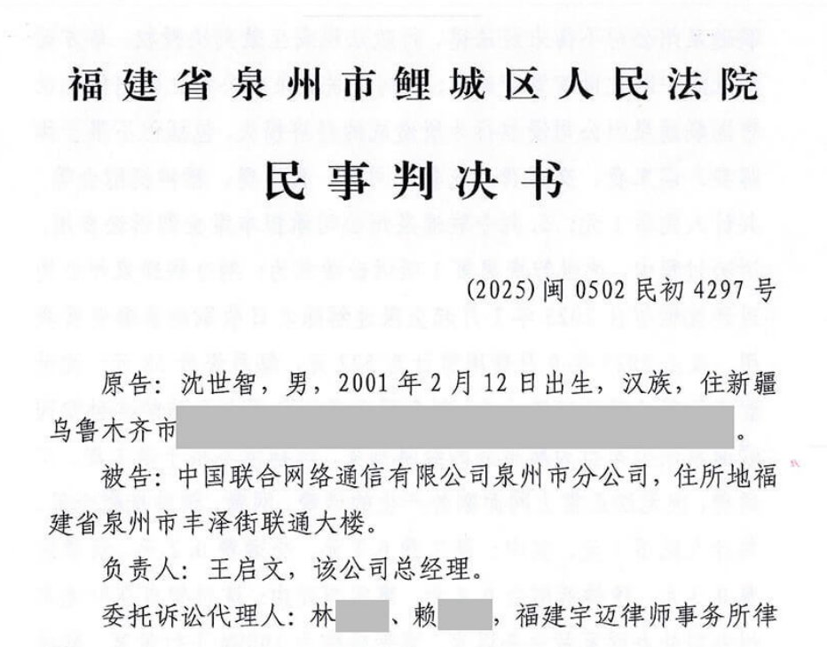

奶昔🥤
@realNyarime
@DarkEye495 也可以来奶昔论坛补个档

DarkEye 👁
@DarkEye495
【后续 3】诉泉州联通案一审取得阶段性胜利，但仍需二审
gh: https://t.co/a2qLIN5hIn
v2ex: https://t.co/oJzfjOiiKj （新用户、未登录用户打不开）
通信人家园: https://t.co/qfiuwcnXz0（发此推文时仍在审核中）
知乎：https://t.co/0roBCNFiEK https://t.co/aZRrVh9CzM